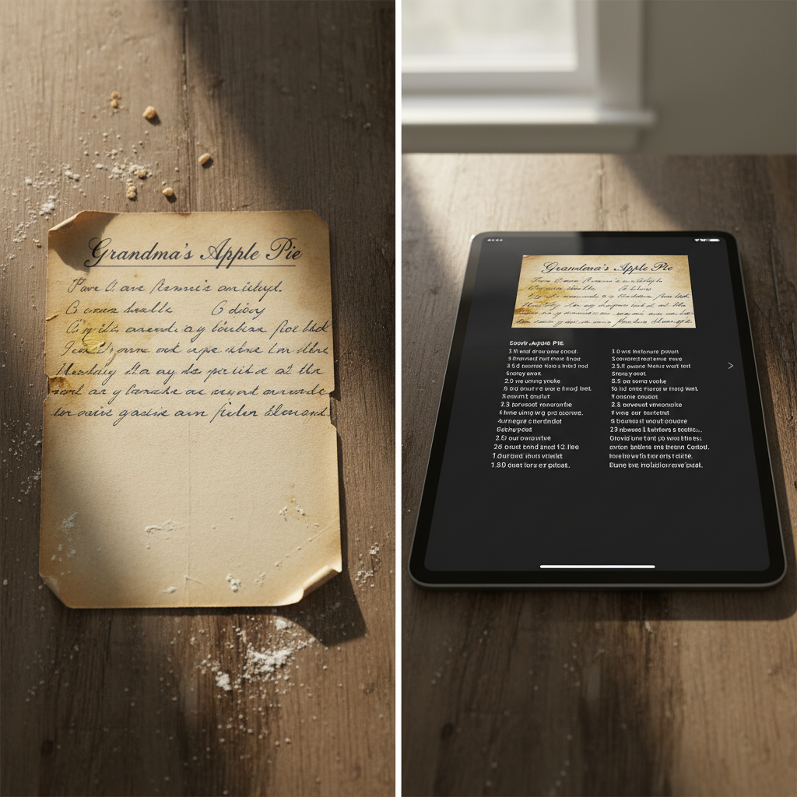

PRESERVE THE SOUL
OF YOUR KITCHEN
Don't let Grandma's unwritten secrets fade with the ink. We turn fragile recipe cards into a living digital heirloom for your children and grandchildren.
Join 450+ family anchors protecting their heritage.
FROM STAINED PAPER TO DIGITAL PERMANENCE.
Our proprietary 2026 AI Beta doesn't just "read" your recipes—it understands them. It preserves the shaky cursive of a 1950s index card while creating a searchable, scalable digital vault that will never fade, tear, or get lost.

YOUR FAMILY TREE HAS A TASTE.
A typed recipe is just instructions. A scan of the warped, stained card your mother used for 40 years is a piece of her soul. AncestryKitchen is the only vault designed to preserve both the instruction and the intimacy of the original handwriting.
VISUAL HANDWRITING METADATA
We preserve the "visual signature" of the original author. Your digital recipes retain the personality of the hand that wrote them.
VOICE STORYTELLING
Attach 60-second audio clips to any dish. Hear Grandma explain the secret to the perfect crust in her own words.
HEIRLOOM PRINTING
One-click professional printing. Turn your collaborative vault into a museum-quality hardcover book for the holidays.
SMART TRANSLATION
Automatically convert "a handful of flour" or "two jam jars" into modern metric or imperial measurements for the next generation.
PRESERVE GRANDMA'S RECIPES FOREVER.
Our 2026 Heritage Beta is now accepting 50 new family anchors this month. Secure your lineage before the ink fades further.